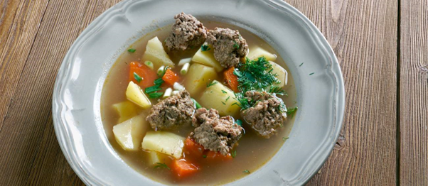

Laikas pasirinkti patiekalus, kurie lepins Jūsų svečių skrandžius apeigose!
Köttbullar – mėsos kotletai, kurių išorė yra traški, o vidus minkštas ir švelnus. Kotletus paprastai sudaro jautiena, sumaišyta su kiauliena arba veršiena, o derinys paprastai pagardinamas svogūnais, druska ir pipirais.
Lutefisk – Skandinaviškas patiekalas iš džiovintų sykų, apdorotų šarmu, todėl žuvis yra kaip želatinas. Paprastai patiekiamas su virtomis bulvėmis, trintais žaliaisiais žirneliais, lydytu sviestu ir keptos šoninės gabalėliais
Ärtsoppa – Tradicinė Švediška geltonųjų pupelių sriuba. Kiti ingredientai yra ploni rausvos druskos kiaulienos griežinėliai ir prieskoniai, tokie kaip svogūnai, mairūnai, imbieras ir gvazdikėliai. Tekstūra tiršta, panaši į troškinį.
Prinsesstårta - Klasikinis švediškas pyragas sudarytas iš biskvito sluoksnių, padengtų vanilės skonio sviestiniu kremu
Stegt flæsk - Esminis danų patiekalas, kurį sudaro kepta, gruzdinta arba orkaitėje kepta kiaulienos papilvė. Tiršti ir traškūs kiaulienos papilvės griežinėliai tradiciškai patiekiami kartu su virtomis bulvėmis ir kvapniu petražolių padažu.
Smörgåstårta – Švediškas sluoksniuotas pyragas, susidedantis iš sumuštinių: baltos arba ruginės duonos riekelių, užpilų ir įdarų, apteptų kreminiu sūriu, majonezu, jogurtu ar deriniu ir papuoštas įvairiomis daržovėmis.
Palt - Populiarūs švediški koldūnai, gaminami su tarkuotomis žaliomis bulvėmis ir įvairiais įdarais.
Blodpudding - Švediškas patiekalas, pagamintas iš gyvūnų kraujo. Paprastai jis ruošiamas su kiaulės krauju, kuris sumaišomas su miltais, alumi arba svagdricka, sviestu ir prieskoniais, tada kepamas orkaitėje.
Lapskaus - norvegiškas troškinys, gaminamas iš jautienos (aviena, kiauliena ir vištiena taip pat yra tinkami variantai), svogūnų, bulvių, morkų, salierų, rūtų sultinio, sultinio, miltų (nebūtina), lauro lapų, čiobrelių, druskos ir pipirų.
Rødkål - Daniškas patiekalas, sudarytas iš raudoniųjų kopūstų, kurie trumpai užplikomi su raudonųjų serbentų sultimis, actu, cukrumi ir įvairiais prieskoniais.
